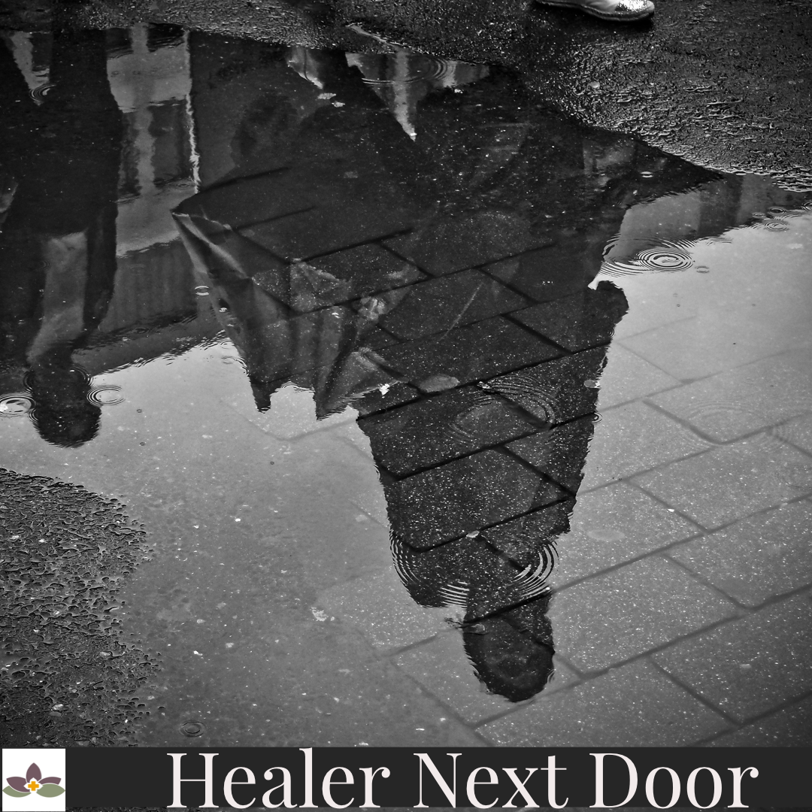
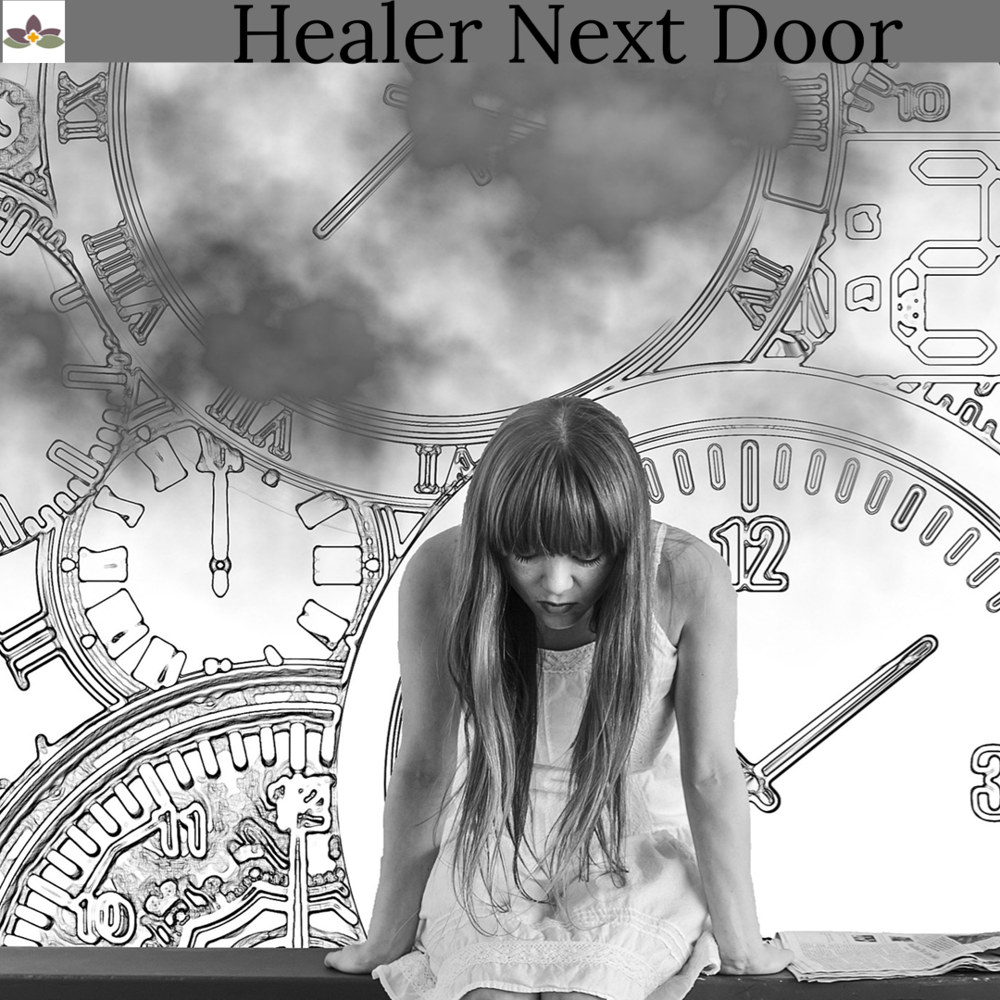
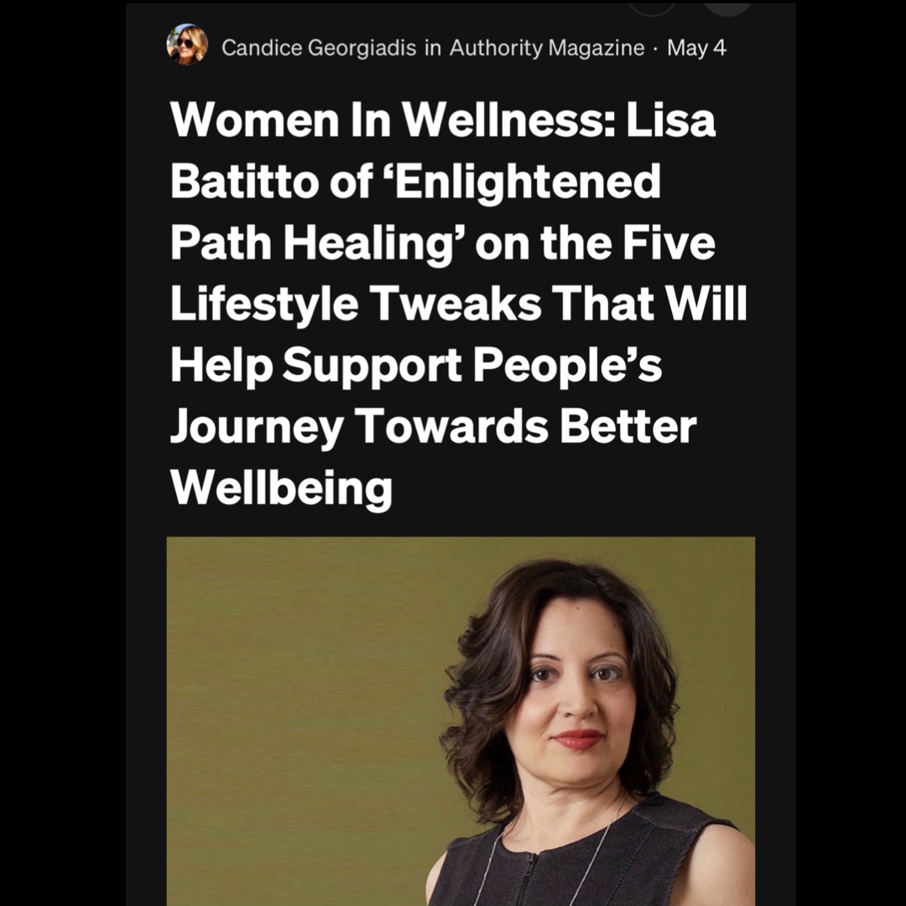

In-Person Healings in Montclair, NJ
It seems like I’ve just been full of news lately!
Read BlogBlog
Thoughts on healing, spiritual life, work, and being human, written by Lisa Batitto with occasional guest contributions.
Browse
Blog
It seems like I’ve just been full of news lately!
Read BlogMeditation is a powerful way to help you relax and clear your mind.
Read BlogThere are a few terms you hear a lot when you’re in the spiritual realm.
Read BlogWe’ve all seen the pictures in our Instagram feeds.
Read Blog Meditation & Mindfulness
Meditation & MindfulnessBuckle up buttercups.
Read Blog Healing & Spiritual Growth
Healing & Spiritual GrowthIt's been about a year since I hung my shingle and it's been one heck of a ride.
Read Blog
Reiki & Energy HealingMy friend and teacher Esther Rivera posted a video on Instagram that I can’t stop thinking about.
Read BlogLittle changes can add up.
Read Blog
Healing & Spiritual Growth“Haunted by a past I cannot change.”
Read BlogAs you may have heard, I’m leading a “getting to know your spirit guides” (sign up lhere ) workshop on Sunday, 5.23 at noon est with my good friend Trece Spalten .
Read Blog
Healing & Spiritual GrowthI am so grateful to Authority Magazine and Thrive Global for including me in their Women in Wellness series.
Read BlogI love shortcuts, don't you?
Read BlogServices
Learn about Reiki, Akashic Records, meditation, Work Trauma Coaching, and Corporate Wellness.
View Services